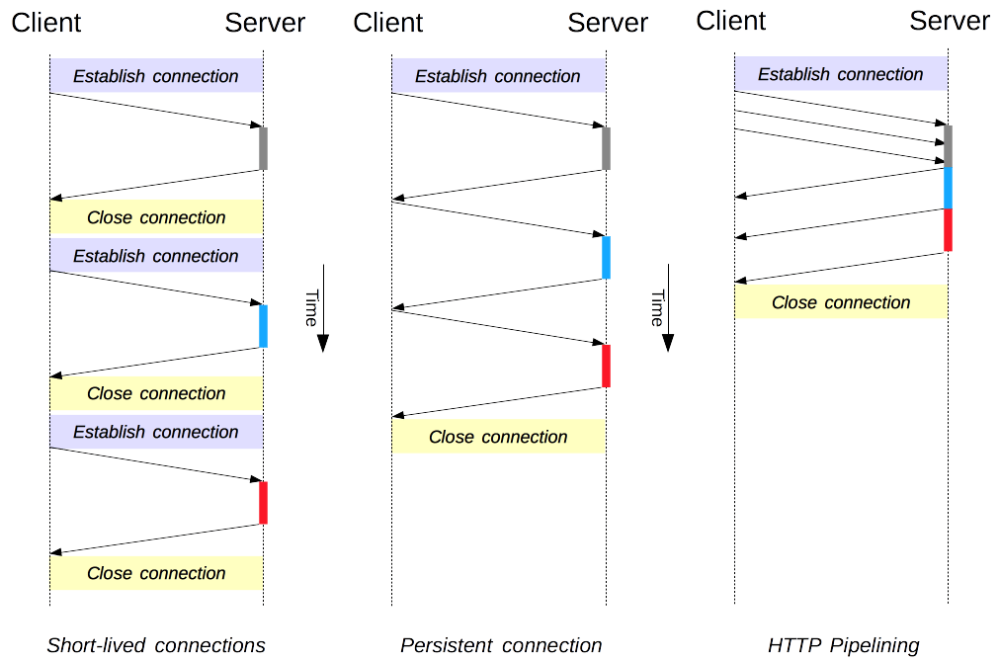

Connection management in HTTP/1.x
Connection management is a key topic in HTTP: opening and maintaining connections largely impacts the performance of websites and Web applications. In HTTP/1.x, there are several models: short-lived connections, persistent connections, and HTTP pipelining.
HTTP mostly relies on TCP for its transport protocol, providing a connection between the client and the server. In its infancy, HTTP used a single model to handle such connections. These connections were short-lived: a new one created each time a request needed sending, and closed once the answer had been received.
This model held an innate limitation on performance: opening each TCP connection is a resource-consuming operation. Several messages must be exchanged between the client and the server. Network latency and bandwidth affect performance when a request needs sending. Modern Web pages require many requests (a dozen or more) to serve the amount of information needed, proving this earlier model inefficient.
Two newer models were created in HTTP/1.1. The persistent-connection model keeps connections opened between successive requests, reducing the time needed to open new connections. The HTTP pipelining model goes one step further, by sending several successive requests without even waiting for an answer, reducing much of the latency in the network.

Note: HTTP/2 adds additional models for connection management.
It's important to note that connection management in HTTP applies to the connection between two consecutive nodes, which is hop-by-hop and not end-to-end. The model used in connections between a client and its first proxy may differ from the model between a proxy and the destination server (or any intermediate proxies). The HTTP headers involved in defining the connection model, like Connection and Keep-Alive, are hop-by-hop headers with their values able to be changed by intermediary nodes.
A related topic is the concept of HTTP connection upgrades, wherein an HTTP/1.1 connection is upgraded to a different protocol, such as TLS/1.0, WebSocket, or even HTTP/2 in cleartext. This protocol upgrade mechanism is documented in more detail elsewhere.
Short-lived connections
The original model of HTTP, and the default one in HTTP/1.0, is short-lived connections. Each HTTP request is completed on its own connection; this means a TCP handshake happens before each HTTP request, and these are serialized.
The TCP handshake itself is time-consuming, but a TCP connection adapts to its load, becoming more efficient with more sustained (or warm) connections. Short-lived connections do not make use of this efficiency feature of TCP, and performance degrades from optimum by persisting to transmit over a new, cold connection.
This model is the default model used in HTTP/1.0 (if there is no Connection header, or if its value is set to close). In HTTP/1.1, this model is only used when the Connection header is sent with a value of close.
Note: Unless dealing with a very old system, which doesn't support a persistent connection, there is no compelling reason to use this model.
Persistent connections
Short-lived connections have two major hitches: the time taken to establish a new connection is significant, and performance of the underlying TCP connection gets better only when this connection has been in use for some time (warm connection). To ease these problems, the concept of a persistent connection has been designed, even prior to HTTP/1.1. Alternatively this may be called a keep-alive connection.
A persistent connection is one which remains open for a period of time, and can be reused for several requests, saving the need for a new TCP handshake, and utilizing TCP's performance enhancing capabilities. This connection will not stay open forever: idle connections are closed after some time (a server may use the Keep-Alive header to specify a minimum time the connection should be kept open).
Persistent connections also have drawbacks; even when idling they consume server resources, and under heavy load, DoS attacks can be conducted. In such cases, using non-persistent connections, which are closed as soon as they are idle, can provide better performance.
HTTP/1.0 connections are not persistent by default. Setting Connection to anything other than close, usually retry-after, will make them persistent.
In HTTP/1.1, persistence is the default, and the header is no longer needed (but it is often added as a defensive measure against cases requiring a fallback to HTTP/1.0).
HTTP pipelining
Note: HTTP pipelining is not activated by default in modern browsers:
- Buggy proxies are still common and these lead to strange and erratic behaviors that Web developers cannot foresee and diagnose easily.
- Pipelining is complex to implement correctly: the size of the resource being transferred, the effective RTT that will be used, as well as the effective bandwidth, have a direct incidence on the improvement provided by the pipeline. Without knowing these, important messages may be delayed behind unimportant ones. The notion of important even evolves during page layout! HTTP pipelining therefore brings a marginal improvement in most cases only.
- Pipelining is subject to the head-of-line blocking.
For these reasons, pipelining has been superseded by a better algorithm, multiplexing, that is used by HTTP/2.
By default, HTTP requests are issued sequentially. The next request is only issued once the response to the current request has been received. As they are affected by network latencies and bandwidth limitations, this can result in significant delay before the next request is seen by the server.
Pipelining is the process to send successive requests, over the same persistent connection, without waiting for the answer. This avoids latency of the connection. Theoretically, performance could also be improved if two HTTP requests were to be packed into the same TCP message. The typical MSS (Maximum Segment Size), is big enough to contain several simple requests, although the demand in size of HTTP requests continues to grow.
Not all types of HTTP requests can be pipelined: only idempotent methods, that is GET, HEAD, PUT and DELETE, can be replayed safely. Should a failure happen, the pipeline content can be repeated.
Today, every HTTP/1.1-compliant proxy and server should support pipelining, though many have limitations in practice: a significant reason no modern browser activates this feature by default.
Domain sharding
Note: Unless you have a very specific immediate need, don't use this deprecated technique; switch to HTTP/2 instead. In HTTP/2, domain sharding is no longer useful: the HTTP/2 connection is able to handle parallel unprioritized requests very well. Domain sharding is even detrimental to performance. Most HTTP/2 implementations use a technique called connection coalescing to revert eventual domain sharding.
As an HTTP/1.x connection is serializing requests, even without any ordering, it can't be optimal without large enough available bandwidth. As a solution, browsers open several connections to each domain, sending parallel requests. Default was once 2 to 3 connections, but this has now increased to a more common use of 6 parallel connections. There is a risk of triggering DoS protection on the server side if attempting more than this number.
If the server wishes a faster website or application response, it is possible for the server to force the opening of more connections. For example, instead of having all resources on the same domain, say www.example.com, it could split over several domains, www1.example.com, www2.example.com, www3.example.com. Each of these domains resolves to the same server, and the Web browser will open 6 connections to each (in our example, boosting the connections to 18). This technique is called domain sharding.

Conclusion
Improved connection management allows considerable boosting of performance in HTTP. With HTTP/1.1 or HTTP/1.0, using a persistent connection – at least until it becomes idle – leads to the best performance. However, the failure of pipelining has lead to designing superior connection management models, which have been incorporated into HTTP/2.